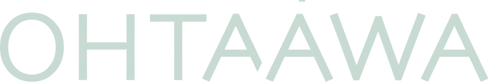

01
Общий вид
Деталь целиком и соседние элементы кузова.

детейлинг-студия · Охта Парк Отправить 3 фотоФото-триаж кузова · OHTAAWA
Покажите общий вид, сам след крупно и поверхность под углом к свету. Подскажем, с чего разумнее начать: очистки, полировки, защиты пленкой или очного осмотра.
По фотографиям не ставим диагноз и не называем окончательную цену. Если снимков недостаточно, честно предложим осмотр.
Снимите за минуту
Не мойте и не трите поврежденное место специально ради фотографии. Сначала зафиксируйте, как оно выглядит сейчас.
Деталь целиком и соседние элементы кузова.
След, царапина или загрязнение без зума.
Отражение помогает увидеть границы и глубину.
Перед отправкой: не включайте в кадр лица, документы и номер автомобиля. Если они попали в снимок, закройте их на телефоне.
Не каждый след требует дорогой работы
По снимкам мы сузим варианты. Окончательный вывод о поверхности и стоимости возможен только после осмотра.
Если след похож на поверхностное загрязнение, подскажем, чего точно не стоит делать самостоятельно.
Когда повреждение выглядит поверхностным, предложим осмотр под направленным светом.
Пленка не исправляет дефект. Объясним правильную последовательность действий.
Если нужен кузовной ремонт или другой профильный специалист, не будем притягивать задачу к детейлингу.
Когда фото недостаточно
На консультации вымоем кузов за наш счет, посмотрим лак под направленным светом и объясним, есть ли смысл в работе прямо сейчас.
Записаться на осмотр Посмотреть защиту зон рискаНачнем с фактов
Три понятных кадра помогут быстрее решить, нужен ли визит и к какому результату вообще стоит стремиться.
Отправить фотографии